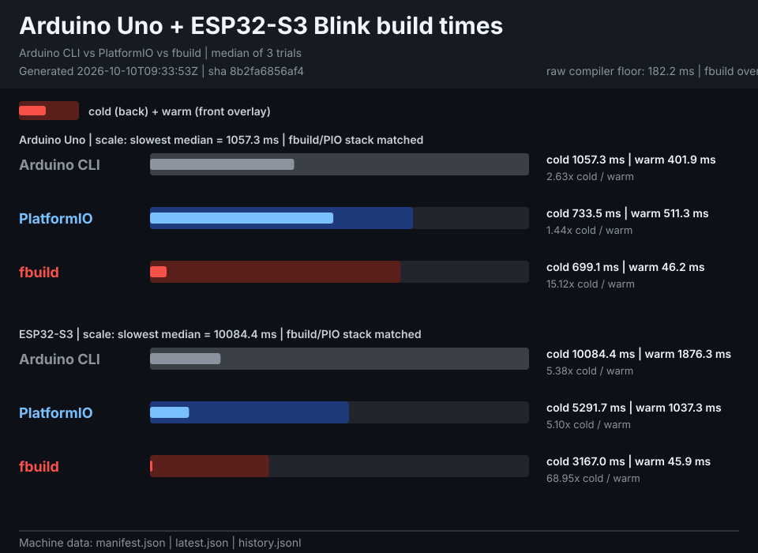

fbuild Blink build benchmark
All three tools compile the same Arduino Uno and ESP32-S3 bench/blink/blink.ino. Cold removes project outputs, reusable framework objects, compiler-object caches, and Arduino/PlatformIO download/HTTP caches while retaining installed packages/toolchains and fbuild package archives. Warm is the immediate no-change rebuild. The narrower warm bar overlays the cold bar.
Resolved package stacks: Arduino Uno: matched; fbuild/PlatformIO ratio shown. ESP32-S3: matched; fbuild/PlatformIO ratio shown. Exact package versions and representative core compiler commands are in latest.json.

| Board | Tool | Cold median | Warm median | Cold / warm | Version |
|---|---|---|---|---|---|
| Arduino Uno | Arduino CLI | 1057.268 ms | 401.949 ms | 2.63x | arduino-cli Version: 1.5.0 Commit: dd407d42d Date: 2026-05-19T14:07:51Z |
| Arduino Uno | PlatformIO | 733.461 ms | 511.259 ms | 1.44x | PlatformIO Core, version 6.1.19 |
| Arduino Uno | fbuild | 699.061 ms | 46.225 ms | 15.12x | fbuild 2.5.39 |
| ESP32-S3 | Arduino CLI | 10084.443 ms | 1876.265 ms | 5.38x | arduino-cli Version: 1.5.0 Commit: dd407d42d Date: 2026-05-19T14:07:51Z |
| ESP32-S3 | PlatformIO | 5291.694 ms | 1037.309 ms | 5.10x | PlatformIO Core, version 6.1.19 |
| ESP32-S3 | fbuild | 3166.979 ms | 45.931 ms | 68.95x | fbuild 2.5.39 |
Cold phase breakdown
| Board | Tool | Phase | Cold median |
|---|---|---|---|
| Arduino Uno | PlatformIO | compile | 233.688 ms |
| Arduino Uno | PlatformIO | convert-size | 68.191 ms |
| Arduino Uno | PlatformIO | link | 35.584 ms |
| Arduino Uno | PlatformIO | pre-compile | 378.438 ms |
| Arduino Uno | fbuild | board-load | 0.020 ms |
| Arduino Uno | fbuild | build-dirs | 0.078 ms |
| Arduino Uno | fbuild | build-info | 1.590 ms |
| Arduino Uno | fbuild | compile-core | 466.893 ms |
| Arduino Uno | fbuild | compile-db | 1.131 ms |
| Arduino Uno | fbuild | compile-lib-deps | 0.000 ms |
| Arduino Uno | fbuild | compile-local-libs | 0.000 ms |
| Arduino Uno | fbuild | compile-sketch | 262.600 ms |
| Arduino Uno | fbuild | compile-variant | 0.002 ms |
| Arduino Uno | fbuild | config-parse | 0.254 ms |
| Arduino Uno | fbuild | core-cache-hydrate | 0.006 ms |
| Arduino Uno | fbuild | core-cache-store | 4.140 ms |
| Arduino Uno | fbuild | fast-path-check | 0.022 ms |
| Arduino Uno | fbuild | flag-collect | 0.003 ms |
| Arduino Uno | fbuild | fp-watches-collect | 0.004 ms |
| Arduino Uno | fbuild | framework-ensure | 0.030 ms |
| Arduino Uno | fbuild | link | 40.501 ms |
| Arduino Uno | fbuild | project-as-lib | 0.005 ms |
| Arduino Uno | fbuild | source-scan | 0.436 ms |
| Arduino Uno | fbuild | toolchain-ensure | 0.024 ms |
| ESP32-S3 | PlatformIO | compile | 3538.717 ms |
| ESP32-S3 | PlatformIO | convert-size | 179.098 ms |
| ESP32-S3 | PlatformIO | link | 976.556 ms |
| ESP32-S3 | PlatformIO | pre-compile | 589.519 ms |
| ESP32-S3 | fbuild | archive-core | 6.039 ms |
| ESP32-S3 | fbuild | board-load | 0.024 ms |
| ESP32-S3 | fbuild | boot-artifacts | 110.433 ms |
| ESP32-S3 | fbuild | build-dirs | 0.100 ms |
| ESP32-S3 | fbuild | compile-core-variant | 2337.668 ms |
| ESP32-S3 | fbuild | compile-db | 2.648 ms |
| ESP32-S3 | fbuild | compile-local-libs | 0.053 ms |
| ESP32-S3 | fbuild | compile-sketch | 675.826 ms |
| ESP32-S3 | fbuild | config-parse | 0.240 ms |
| ESP32-S3 | fbuild | core-cache-hydrate | 0.005 ms |
| ESP32-S3 | fbuild | core-cache-store | 10.406 ms |
| ESP32-S3 | fbuild | fast-path-check | 0.006 ms |
| ESP32-S3 | fbuild | fingerprint-save | 0.392 ms |
| ESP32-S3 | fbuild | flag-collect | 0.003 ms |
| ESP32-S3 | fbuild | fp-watches-collect | 0.004 ms |
| ESP32-S3 | fbuild | fw-libs | 9.265 ms |
| ESP32-S3 | fbuild | lib-deps | 0.000 ms |
| ESP32-S3 | fbuild | link-convert-size | 718.874 ms |
| ESP32-S3 | fbuild | pioarduino-resolve | 2.293 ms |
| ESP32-S3 | fbuild | project-lib | 0.020 ms |
| ESP32-S3 | fbuild | scan-sources | 0.637 ms |
Machine-readable data
- manifest.json — stable discovery index for agents
- latest.json — metadata, raw trials, and medians
- history.jsonl — rolling 365-run history